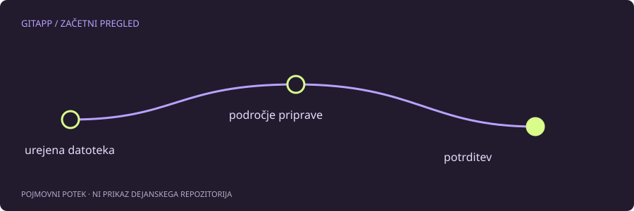

Urejevalnik in Git ne gledata nujno iste vsebine
Sporočilo nothing to commit ne pomeni, da Git ne deluje. Pomeni, da v trenutnem kontekstu ne vidi ustrezne razlike za novo potrditev. Sprememba je lahko še neshranjena v urejevalniku, datoteka je v drugem klonu ali pa si že potrdil točno to vsebino.
Začni s shranjevanjem datoteke in preverjanjem njene dejanske poti. Dva odprta projekta z enakim imenom sta pogost razlog za zmedo. Barvna oznaka v urejevalniku ni nadomestilo za pregled trenutnega repozitorija v terminalu.
Tri kratka vprašanja
Ali si v pravem repozitoriju? Ali je datoteka na disku res drugačna? Ali je razlika že pripravljena? Za pregled uporabi:
git rev-parse --show-toplevel
git status --short
git diff
git diff --cachedgit diff običajno primerja delovno drevo s področjem priprave. git diff --cached primerja pripravljeno vsebino z zadnjo potrditvijo. Zato je povsem mogoče, da prvi ukaz ne pokaže ničesar, drugi pa pokaže vse spremembe, ki čakajo na potrditev.
Nove datoteke in prezrta vsebina
Navadni git diff ne pokaže vsebine novih, še nesledenih datotek. Njihovo prisotnost preveri z git status. Če jih tudi tam ni, poglej pravila prezrtja. Diagnostika za izbrano pot je na primer:
git check-ignore -v -- opombe.txtIme datoteke zamenjaj z dejansko potjo. Če ni zadetka, to še ne pomeni, da je vse pripravljeno za potrditev. Preveri tudi, ali je datoteka že sledena in ali si njeno novo vsebino sploh shranil. Za napredno diagnostiko že sledenih poti obstajajo dodatne možnosti, ki jih razloži uradna dokumentacija.
Vsebina je pomembnejša od časa spremembe
Sprememba časa datoteke sama po sebi ni vsebinska sprememba za Git. Tudi če datoteko odpreš in shraniš brez drugačne vsebine, nova potrditev navadno ni potrebna. Nastavitve koncev vrstic lahko dodatno vplivajo na prikaz razlik med delovno in shranjeno obliko.
Ne dodajaj praznih potrditev samo zato, da bi utišal sporočilo. Prazna potrditev ima v določenih postopkih svoj namen, ne razloži pa, kam je šla pričakovana vsebina.
Zaključi s pregledom priprave
Ko najdeš datoteko, pripravi samo predvidene poti in preveri git diff --cached. Tako se izogneš nenamernemu vključevanju dnevnikov, skrivnosti in začasnih datotek. V vizualnem laboratoriju lahko najprej preizkusiš, zakaj dodatno urejanje po git add ne spremeni že pripravljenega posnetka.
Vir in obseg
Referenca: uradni priročnik za git-status. Primeri so pripravljeni za učenje in niso opis posega v dejanski projekt. Preberi način preverjanja.